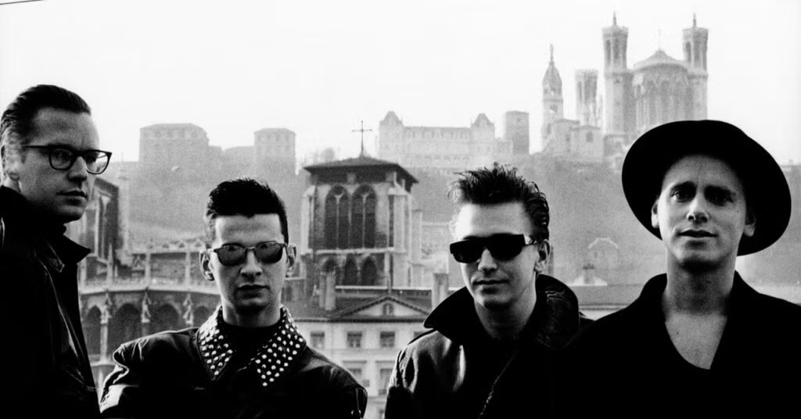
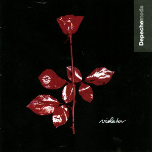

Uma banda pós-punk britânica formada em 1980.

Depeche Mode formou-se em 1980, em Basildon, Essex, na Inglaterra. A banda começou como um grupo de synth-pop, mas rapidamente evoluiu para um som mais sombrio e complexo. O primeiro álbum da banda, "Speak & Spell", foi lançado em 1981 e apresentou o hit "Just Can't Get Enough".
Ao longo dos anos 80, Depeche Mode lançou uma série de álbuns de sucesso, incluindo "A Broken Frame" (1982), "Construction Time Again" (1983) e "Some Great Reward" (1984). A banda ganhou popularidade internacional com o lançamento de "Black Celebration" (1986) e "Music for the Masses" (1987).
Nos anos 90, Depeche Mode continuou a inovar com álbuns como "Violator" (1990), que incluiu os hits "Personal Jesus" e "Enjoy the Silence". O álbum "Songs of Faith and Devotion" (1993) também foi um grande sucesso, consolidando a posição da banda como uma das mais influentes do gênero.
Hoje, Depeche Mode é considerado um dos pioneiros da música eletrônica e continua a influenciar artistas em todo o mundo.
"I think Depeche Mode music somehow appeals to the oddball, to the person who is looking for something a little bit different."Dave Gahan
"Words like violenceMartin Gore - Enjoy the Silence
Break the silence
Come crashing in
Into my little world
Painful to me
Pierce right through me
Can't you understand
Oh my little girl"

Você pode encontrar mais detalhes sobre a banda no site oficial.